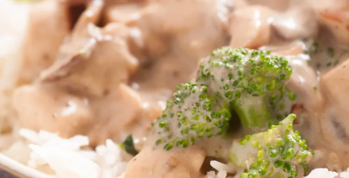

5 pimientos rojos dulces
1/2 taza de Agua, 1/4 cucharadita de Comino molido, 1 paquete de MAGGI® JUGOSO AL SARTÉN® CON AJO Y CEBOLLA.
4 hojas, 4 filetes de pescado blanco aprox.
120 g c/u, 1/2 taza de mayonesa
El jugo de 2 limones.
1. Licúa los pimientos con el agua y el comino. Cuela la mezcla y reserva.
2. Abre una Hoja de JUGOSO AL SARTÉN® con Ajo y Cebolla MAGGI®, coloca un filete, cierra y presiona ligeramente para impregnar las especias.
3. Abre la hoja nuevamente, unta el filete con un poco de mayonesa y un poco de la salsa que licuaste. Cierra la hoja, colócalo en una sartén sin aceite, precalentada a fuego bajo durante 1 minuto, tapa y cocina a fuego bajo de 4 a 5 minutos por cada lado o hasta que esté bien cocido.
4. Retira la hoja y repite el procedimiento con el resto de los filetes.
5. Sirve y cubre con jugo de limón.

Pollo en Salsa de Brócoli
(50g.) 2 onzas de tocino,
(295g.) 1 Lata Crema De Leche Nestlé,
(500g.) 5 tazas de Brócoli,
(1kg.) 2 libras de Pechuga De Pollo Deshuesada,
(65g.) 1 Sobre Crema De Brócoli MAGGI® Disuelta en 2 tazas de leche,
(5g.) 1 Cucharadita de Aceite De Oliva,
(40g.) 1 Cebolla.
1. Cortar las pechugas en forma de filetes y trocear el brócoli.
2. Por un lado, cocinar las pechugas llevándolas a hervor en una olla con suficiente agua y los condimentos de su elección, se puede incluir unas hojas de laurel, media cebolla y un trozo de pimiento.
3. Por otro lado, hervir el brócoli por unos 5 minutos como máximo, para que no pierda sus propiedades.
4. Calentar un sartén con un poco de aceite de oliva y sofreír el tocino hasta que se dore por completo. Luego agregar el pollo y saltear todo junto. La pechuga se puede dejar en filetes o trocear al gusto.
5. Por último, añadir la Crema de Brócoli MAGGI® disuelta en 2 tazas de leche al sartén, el brócoli y continuar cocinando hasta que hierva y reduzca al gusto.
6. Servir las pechugas de pollo en salsa de brócoli acompañadas con arroz blanco o ensalada fresca. También se puede sustituir el arroz con pasta corta.
1. Marinar los mariscos con sal y pimienta por 5 minutos
2. En una olla mediana, a fuego medio, calentar la mantequilla y sofreír el ajo y la cebolla por 2 minutos. Agregar los mariscos junto con el vino blanco y cocinar por 5 minutos.
3. Diluir en el agua el sobre de Crema de Mariscos MAGGI®, añadirlo a la olla y cocinar a fuego medio por 5 minutos o hasta que hierva. Bajar el fuego, agregar la Leche Evaporada IDEAL® y cocinar por 6 minutos revolviendo constantemente.
4. Por último, agregar el cilantro y la pasta cocida, revolver, servir y disfrutar.